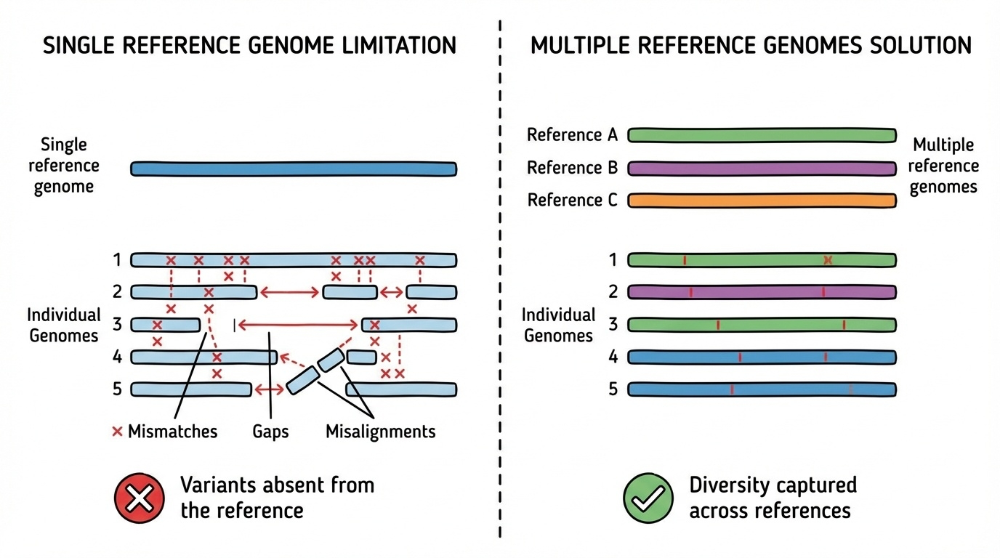
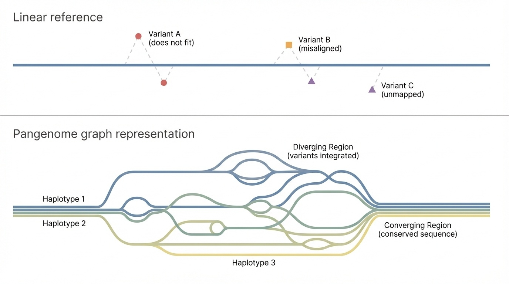
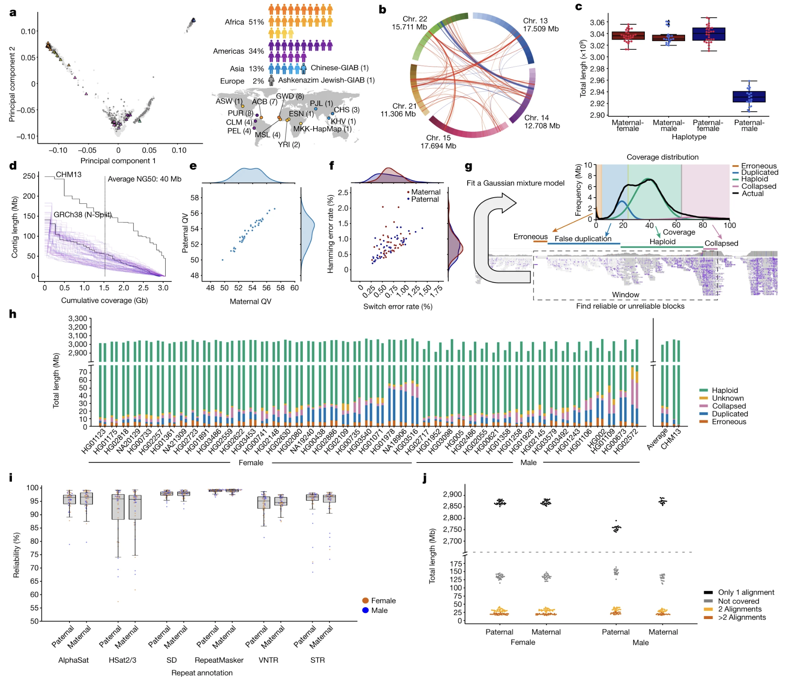
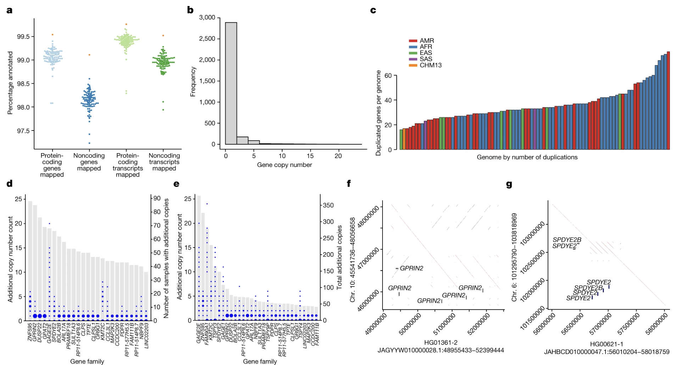
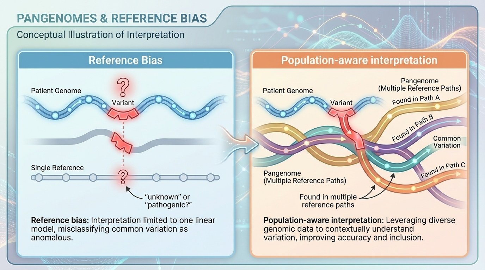

BSMS205 · Genetics
From Single Reference
Chapter 4 · Part I · The Human Genome
Welcome to Chapter four. In Chapter three we celebrated T2T-CHM thirteen — the first truly complete, gapless human genome. That sounds like the end of the story, but it isn't. CHM thirteen comes from one source. One genome cannot represent the genetic diversity of eight billion humans. Today we ask the obvious next question: if one reference is not enough, what should we use instead? The answer the field arrived at in twenty twenty-three is the pangenome. Let's see what that means and why it matters.
A question to start with
We finally have a completeIs one enough?
Hold this question in your head for the rest of the lecture. T2T-CHM thirteen finished the job that the Human Genome Project started — every base, no gaps, end to end. By any measure, it is a triumph. But it represents one genome. One ancestry. One pair of nearly identical chromosomes. The question is not whether CHM thirteen is good. It is whether any single reference, no matter how perfectly sequenced, can describe a species as diverse as humans. Spoiler: it cannot. And that is what this chapter is about.
How different are two human genomes?
Millions of single-letter differences — SNPs
Larger chunks inserted, deleted, duplicated, flipped — SVs
Gene copy numbers vary between individuals
Some sequences exist in some populations only
Let's set the scale. If you compare your genome to your neighbor's, you find millions of single-letter differences — those are S N Ps, single nucleotide polymorphisms. On top of that, there are larger structural changes: chunks of DNA inserted, deleted, duplicated, or flipped backwards. Those are structural variants, S Vs. Even more dramatic, the same gene can exist in different copy numbers in different people, and some DNA sequences are present in some populations and absent in others. A single reference is one specific point in this enormous space of variation.
Two stories that show the cost
Drug response
East Asian population insertion
Changes protein shape
Missing from referenceWhy does the drug behave differently?
Diagnosis
African ancestry patient
Large deletion in a gene
Disease — or normal variant? Single reference cannot say
Two everyday stories that show the cost of relying on a single reference. First — drug response. Imagine a small insertion that is common in East Asian populations and slightly changes the shape of a protein a drug binds to. If your reference does not include that insertion, you can stare at the data forever and not see why the drug behaves differently in those patients. Second — diagnosis. A patient of African ancestry has a fifty-kilobase deletion in a gene region. Is that a disease-causing mutation or a normal polymorphism in their population? With a single European-derived reference, you cannot tell. With a diverse pangenome, you can.
Roadmap for today
Why one reference is not enough
What a pangenome is — graph vs line
The HPRC · 47 individuals · 94 haplotypes
What the pangenome revealed
Real-world impact & equity
Limits and what comes next
Here is the path for today. First — why a single reference is fundamentally limited, even when it is gapless. Second — what a pangenome actually is, and how a graph representation differs from a single linear sequence. Third — the Human Pangenome Reference Consortium, the H P R C, which in twenty twenty-three released the first draft pangenome from forty-seven individuals. Fourth — what new biology that pangenome revealed. Fifth — why this matters in clinic, in drug development, and in equity. Finally, the limits and what comes next. Let's begin.
§ 1
One Reference,
Let's spend a few minutes on the core problem. Why is using a single reference, no matter how good, a structural limitation? The answer is something called reference bias.
Reference bias · what is it?
Every genome is compared to one sequence
Variants appear as mismatches or gaps
Common-in-population variants flagged as rare or pathogenic
The reference becomes a norm — and everyone else looks abnormal
Reference bias is a simple idea with serious consequences. When every patient's DNA is aligned to one reference sequence, anything that differs from that reference shows up as a mismatch or a gap. If your reference is mostly European, then variants that are common in African or Asian populations look unusual. They get flagged. They get over-interpreted. The reference subtly becomes a norm — a standard against which every other genome is measured — and that is not what biology wants from a reference. It wants a description of diversity, not a yardstick.
The library, not the textbook
A single reference is one textbook.library .
Different books explain the same concept differently
Some include chapters others lack
Consult many → fuller picture
Here is the analogy I want you to carry. A single reference genome is one textbook. It is detailed, useful, and authoritative — but it is one author's voice. A pangenome is a library. Different books explain the same concept in different ways, include different examples, and contain chapters that others lack. By consulting multiple books, you get a more complete understanding. The shift from a single reference to a pangenome is the shift from one textbook to a whole library. Same domain. Many voices. Better answers.
Why one reference is not enough

Figure 1. Aligning many people to one reference (left) makes diverse variants appear as mismatches. With multiple references (right), each person finds at least one good match.
Here is the picture in one figure. On the left, every individual is aligned to a single reference, and any variant they carry shows up as a mismatch or a gap. The figure looks busy because the diversity has nowhere to go except onto the reference. On the right, multiple references are available, and each individual aligns well to at least one of them. The diversity is captured, not flagged. That is the core visual intuition for why a pangenome works. Same data, different denominator.
§ 2
What Is
Now let's nail down the definition. The word pangenome gets thrown around — let's say exactly what it means, and how it is represented in software.
Pangenome · a definition
A collection of multiple complete, high-quality genomes from diverse individuals, designed to capture the full range of variation in a population.
Many references, not one
Each is complete and high quality
Chosen to cover ancestry diversity
Here is the working definition. A pangenome is a collection of multiple complete, high-quality genome sequences from diverse individuals, designed to capture the full range of genetic variation in a population. Three pieces matter. First — multiple, not one. Second — each genome must be complete and high quality, not a fragmentary draft. Third — the individuals must be selected to span ancestry diversity, not just convenience. With these three pieces, the pangenome stops being a single yardstick and becomes a description of the species.
Linear reference vs graph
Linear (old)
One path through DNA
Variants = deviations
One sequence is "correct"
Graph (new)
Many paths through same regionBranches where sequences diverge
Converge where they agree
No single "correct" path
How is a pangenome actually stored? Two options. The old way is linear — DNA is one path, variants are deviations from it, and one sequence is treated as canonical. The new way is a graph. Imagine the genome as a road network. Where everyone agrees, the roads converge. Where people differ, the road branches. Each individual's genome is a path through the graph. There is no single correct path — only paths that exist in the population. This is a fundamentally different data structure, and it required new alignment tools to actually use it.
Linear vs pangenome graph

Figure 2. Top: a linear reference forces every variant onto one sequence. Bottom: a pangenome graph offers multiple paths — branches diverge where haplotypes differ, converge where they agree.
Here is the picture. On top, a linear reference — one straight line, every variant pinned to it. On the bottom, a pangenome graph. Where haplotypes differ, the path branches. Where they agree, paths merge back together. This is not just a prettier picture — it is a different mathematical object. Algorithms that align reads to a graph give different, better answers than algorithms that align to a single line, especially in regions where individuals genuinely differ. Hold this image as the mental model for the rest of the lecture.
A short worked example
Three haplotypes, one region
Hap A: ...ACGTAAACCCC GGTA...
Hap B: ...ACGTAAA— GGTA... (deletion)
Hap C: ...ACGTAAACCCCCCCC GGTA... (expansion)
Linear ref = one of these. Graph = all three paths .
Let's make this concrete with a tiny example. Three haplotypes share the same flanking sequence — A C G T A A A on the left and G G T A on the right. In the middle, haplotype A has a four-base C insert. Haplotype B has nothing — a deletion. Haplotype C has a longer expansion of eight Cs. A linear reference must pick one of these three. The other two then look like variants. In a graph, all three middles exist as alternative paths between the same flanking nodes. No haplotype is privileged. Each one is just a route through the network.
§ 3
The HPRC
Now to the headline event of this chapter. In twenty twenty-three, the Human Pangenome Reference Consortium published the first draft human pangenome in Nature — Liao and colleagues. Let's look at what was in it.
HPRC · the 2023 release
47
individuals · diverse ancestry
94
phased haplotypes (diploid × 2)
Liao et al. 2023 · Nature 617, 312–324
Here are the headline numbers. Forty-seven individuals, sequenced and assembled to T2T-like quality. Because humans are diploid — one chromosome from each parent — those forty-seven individuals provide ninety-four distinct haplotypes. Ninety-four full-genome paths through the graph. The paper landed in Nature in twenty twenty-three, Liao and colleagues, and it is the foundational reference for everything we are about to discuss. Hold the numbers — forty-seven individuals, ninety-four haplotypes.
Who is in the pangenome?
Population group Share Examples
African 51% Yoruba · Gambian · Mende American 34% Puerto Rican · Peruvian · Colombian · Mexican Asian 13% Han Chinese · Japanese · Punjabi · Bengali European 2% British · Finnish · Iberian
A deliberate inversion of the GRCh38 ancestry skew.
Look closely at the ancestry breakdown. Fifty-one percent African, thirty-four percent American, thirteen percent Asian, only two percent European. That is not random. It is a deliberate inversion. GRCh thirty-eight is dominated by European-derived sequence; previous reference panels were almost entirely European. The HPRC chose to over-sample African and admixed American populations precisely because African populations carry the deepest genetic diversity in our species, and because under-representation of these groups was the original problem the pangenome was built to fix. This is one of the most important design choices in modern human genomics.
Genetic diversity captured

Figure 3. Each dot = one individual; closer dots are more genetically similar. The 47 samples span major populations · Liao et al. 2023, Nature .
Here is panel one a from the Liao paper. Each dot is one of the forty-seven individuals, positioned by overall genetic similarity. Dots that cluster together are more genetically similar; dots far apart are more different. You can see the African samples spread out the most — that is genuine biology, not an artifact, because African populations are the most genetically diverse human populations on Earth. The other clusters represent admixed American, Asian, and European samples. Visually, you see the design intent: the panel deliberately samples across the full breadth of human variation.
Why diploid means harder
CHM13 was uniparental · two identical haplotypes
Real people are diploid · two different haplotypes
Assembly must phase : separate maternal from paternal
HPRC delivered phased assemblies for all 47
A technical note that matters. In Chapter three we used CHM thirteen because its two chromosome copies were essentially identical — a hydatidiform mole genome — which made assembly tractable. Real people are diploid: two different haplotypes per chromosome. To assemble a real person, you must separate maternal from paternal sequence. That process is called phasing. The HPRC team delivered phased assemblies for all forty-seven individuals — every chromosome split correctly into its two parental copies. This is technically harder than CHM thirteen, and the fact that it worked at scale is itself a remarkable achievement.
How was it built?
Technology Read length Role
PacBio HiFi ~20 kb Long & accurate Oxford Nanopore >100 kb Ultra-long · spans repeatsHi-C — 3D folding · haplotype phasing Illumina ~150 bp Short · error correction
How was each genome built? The same technological recipe as T2T-CHM thirteen, but applied forty-seven times. PacBio HiFi reads — about twenty kilobases long, very accurate — for the assembly backbone. Oxford Nanopore — over one hundred kilobases — for spanning the longest repeats. Hi-C — a method that captures three-dimensional DNA folding — for separating maternal and paternal haplotypes. And Illumina short reads for final error correction. None of this is new technology by twenty twenty-three. The achievement is in the integration, the scale, and the quality control across all forty-seven samples.
§ 4
What the
Now the science. With ninety-four haplotypes assembled, what did the team actually find? Three big discoveries — missing DNA, varying gene copy numbers, and dramatically improved variant detection.
We were missing a lot of DNA
119 Mb
DNA absent from GRCh38
~4% more sequence than the single reference
Includes genes and regulatory regions
90 Mb of it is structural variation
First headline finding. Across the ninety-four haplotypes, the team found about one hundred nineteen million base pairs of DNA that are simply not in GRCh thirty-eight at all. That is roughly four percent more sequence than the single reference contains. And this is not junk. It includes complete gene sequences, regulatory regions, and large structural variants. About ninety million base pairs of those one hundred nineteen come from structural variation — meaning regions where different people genuinely have different chunks of DNA, not just different letters in the same chunk. The single reference was simply blind to most of this.
What was hiding in those 119 Mb?
Gene sequences · complete genes missing from GRCh38Regulatory regions · controls for expressionStructural variants · large insertions, deletions, inversionsPopulation-specific sequences
Let's break those one hundred nineteen megabases down. Some of them are full gene sequences — actual protein-coding genes that GRCh thirty-eight just did not have. Some are regulatory regions — DNA that controls when and where genes are turned on. Some are structural variants — large insertions, deletions, and inversions. And some are population-specific sequences, present in some populations and not in others. Each category has different biological implications, but the headline is the same: the single reference was incomplete in a way the field had been underestimating.
Genes come in different copy numbers
1,115 gene duplications vary across individualsSome people have 1–2 copies , others have 20+
The single reference assumed everyone matched one count
The reality is much more complex than a single reference can show.
Second discovery. The team identified one thousand one hundred fifteen gene duplications that vary between individuals. Read that again. Over a thousand genes where the number of copies differs from person to person. Some people have one or two copies. Others have twenty or more. The single reference, by definition, assigned one number to each gene — and that number was wrong for most of the population at most of these loci. The reality of human gene content turns out to be much more flexible than a fixed list of twenty thousand entries.
Why does copy number matter?
AMY1 · starch digestion
Up to 15+ copies in starch-eating populations
2–4 copies in others
Immune & drug genes
More copies → stronger response
Fewer copies → may reduce autoimmunity
Drug-metabolism genes affect dose
Why does copy number matter biologically? Three quick examples. The A M Y one gene encodes salivary amylase, which breaks down starch. Populations whose ancestors ate starch-rich diets carry up to fifteen or more copies of A M Y one — they make more enzyme, they digest starch better. Populations with traditionally low-starch diets carry only two to four copies. A clean evolutionary signal. Second — many immune-system genes vary in copy number. More copies can mean better infection defense; fewer can mean lower autoimmune risk. Third — drug-metabolism genes vary too, which directly affects how fast a drug clears your system, and therefore the right dose. Copy number is not a curiosity. It is medically actionable.
Copy number across populations

Figure 4. Most genes appear in 1–2 copies, but some reach 20+. Patterns differ by population (AMR · AFR · EAS · SAS · CHM13) · Liao et al. 2023, Nature .
Here is panels two b and c from Liao et al. Panel b on the left shows the distribution: most genes sit at one or two copies, but a tail extends out to twenty or more for some genes in some individuals. Panel c on the right colors each individual by ancestry — A M R for admixed American, A F R for African, E A S for East Asian, S A S for South Asian, and CHM thirteen as a single comparison. The patterns of duplication differ between populations. This visual diversity was completely invisible in single-reference analyses. It only becomes visible when you assemble each haplotype independently and compare.
Better detection of structural variants
Deletions — chunk of DNA missingInsertions — extra DNA addedDuplications — region copiedInversions — segment flipped backwards
SVs affect more total DNA than all SNPs combined.
Third discovery — and arguably the most clinically important — is dramatic improvement in detecting structural variants. Quick taxonomy. Deletions are missing chunks. Insertions are extra chunks. Duplications are repeats. Inversions are flips. These are not edge cases. Across the genome, structural variants together affect more total base pairs than all S N Ps combined. Many serious diseases are caused by structural variants rather than single-letter changes. And these are exactly the variants that single-reference alignment finds hardest, because mismatches and gaps both look like alignment failures.
Pangenome accuracy gain
−34%
errors in small variants (SNPs & small indels)
+104%
improvement in detecting structural variants
More than doubling SV accuracy.
Two numbers from the paper. When small variants — S N Ps and small insertions or deletions — are called against the pangenome instead of GRCh thirty-eight, error rates drop by about thirty-four percent. That is already significant. But the bigger win is in structural variants — detection improves by one hundred four percent, more than doubling. Why such a dramatic improvement? Because when you have ninety-four haplotypes to align against, any structural variant that exists in your patient is probably also present in at least one of those haplotypes. The right answer is in the panel. With a single reference, the right answer often was not there.
Why the gain · in one line
With 94 haplotypes in the panel,matches one of them .
Here is the intuition in one sentence. With ninety-four haplotypes in the panel, a structural variant common in your patient's population is probably already represented by at least one of them. The aligner finds a clean match. The variant is correctly identified. With a single reference, that same variant looks like a mess of mismatches and gaps, and the aligner either flags it as low confidence or misses it entirely. More references means more matches means better answers. That is the engine of the improvement.
§ 5
Real-World Impact
Why does this matter beyond the lab? Three areas — clinical diagnostics, drug development, and equity in medicine.
Clinical case · before vs after
Before · single reference
African-ancestry patient
50-kb deletion in a gene
Flagged: "likely pathogenic"
Worry · invasive testing
After · pangenome
Same deletion seen in 30% of African haplotypes
Reclassified: "benign · common"
Patient spared
Concrete clinical example. A patient of African ancestry comes in. Sequencing reveals a fifty-kilobase deletion in a gene region. With only GRCh thirty-eight to compare against, the clinical report flags it as likely pathogenic — because it differs from the reference, and most labs treat deviations as suspect. The patient gets called back, worried, possibly subjected to invasive follow-up testing. With the pangenome, the same lab now sees that this deletion appears in roughly thirty percent of the African haplotypes in the panel. It is a normal polymorphism in that population. The variant is reclassified as benign. The patient is spared. Same data, different denominator, different outcome.
From bias to equity

Figure 5. Single reference (left) wrongly flags population variants as pathogenic. Pangenome (right) compares against many ancestries → fewer false positives, more equitable diagnosis.
Here is the same story as a picture. On the left, a single reference forces every patient's variant to be compared against one yardstick — and patients from under-represented populations end up with more uncertain or wrong calls because their normal variants look unusual. On the right, the same variant is checked against many ancestry-matched haplotypes, and a population-common variant lights up as such instead of as a disease candidate. The pangenome is not just more sensitive — it is more fair. Equity in genomics is a technical property of the reference panel.
Drug development
Trials enroll diverse populations
But analyses use a single reference → variants missed
Pangenome enables:
Better dose recommendations per population
Understanding population-specific side effects
Identifying who benefits most
Drug development is the second area. Pharmaceutical trials increasingly enroll diverse populations — that is now standard, partly mandated by regulators. But the analysis pipelines still typically use a single reference. So even when diverse patients are recruited, structural variants common in their populations are invisible to the analysis. The pangenome closes that loop. With population-aware variant calling, drug developers can identify dose differences, predict side effects, and find sub-populations that benefit most. This is precision medicine in the literal sense — medicine that accounts for who you are at the genetic level.
Disease research wins
Autism spectrum · often duplications & deletionsSchizophrenia · associated with copy number variantsCardiovascular · some forms linked to lipid-gene SVs
SV-driven diseases benefit most from a pangenome.
Where does disease research benefit most? In the disorders most strongly linked to structural variants. Autism spectrum conditions are often driven by duplications and deletions of specific gene regions. Schizophrenia has well-known associations with copy number variants. Some forms of cardiovascular disease trace back to structural variants in lipid metabolism genes. These are exactly the categories where single-reference detection has been weakest, and where pangenome-based detection now offers the biggest gains. As the panel expands, expect a wave of new associations in these areas.
§ 6
Limits &
The 2023 draft is a major step, not the destination. Let's talk about what is still hard and what comes next.
What is still challenging
The most repetitive ~4.4% of the genome
Centromeric satellite arraysRibosomal DNA arraysSome heterochromatic regions
Not a failure — it's genuine biological complexity .
About four point four percent of the genome remains hard. The same hard regions we discussed in Chapter three — centromeric satellite arrays, ribosomal DNA arrays, and some heterochromatic regions. These vary so dramatically between individuals that even with multiple complete genomes, aligning and comparing them is non-trivial. This is not a failure of the project. It reflects the real biology — these regions genuinely do differ from person to person at a level that resists simple comparison. Future work will need new methods specifically for these regions.
The roadmap · 47 → 350
Cover more rare variants
Include more under-represented populations
Enable finer sub-population studies
The HPRC's stated long-term target is three hundred fifty individuals — seven hundred haplotypes. That is roughly seven times the current panel. With seven hundred haplotypes, more rare variants are captured, more populations are represented, and analyses can resolve patterns at the sub-population level. The pace is roughly one wave per two to three years; expect the expanded reference around twenty twenty-six or twenty twenty-seven. And the ambition does not stop with humans — pangenomes are now being built for crop species like rice, wheat, and maize, for livestock, and for major model organisms.
The evolution · references compared
Reference Year Coverage Limit
GRCh38 2013 ~95% ~151 Mb gaps · Euro-skewed T2T-CHM13 2022 100% Single source HPRC draft 2023 >99% per hap 47 individuals · some repeat gaps HPRC future ~2026–27 >99% per hap 700 hap · most repeats still hard
Here is the evolution of human genome references in one table. GRCh thirty-eight in twenty thirteen — about ninety-five percent coverage, one hundred fifty-one megabases of gaps, and a heavy European bias. T2T-CHM thirteen in twenty twenty-two — one hundred percent coverage, gapless, but a single source. The HPRC draft in twenty twenty-three — over ninety-nine percent per haplotype across forty-seven individuals, but still some hard repeat regions. And the future HPRC, around twenty twenty-six or twenty-seven — seven hundred haplotypes, comprehensive diversity, with most repeats remaining the hardest problem. The trajectory is clear: from one map to many maps.
Different references · different jobs
Genome structure → T2T-CHM13 (gapless)Clinical diagnostics → pangenome (reduces false positives)Population genetics → pangenome (captures variation)Evolution vs primates → human + primate pangenomes
The future is not one reference — it's the right reference for your question .
The takeaway here is not that the pangenome replaces everything else. It does not. The future of genomics is not about choosing one reference — it is about using the right reference for the question. To study the architecture of a complete human genome, T2T-CHM thirteen is ideal — it shows the complete structure with no gaps. For clinical diagnostics, the pangenome reduces false positives and improves variant interpretation across populations. For population genetics, the pangenome reveals variation patterns that single references hide. For evolutionary studies, you compare human pangenomes to primate pangenomes. Different maps for different questions.
§ 7
Summary
Let's pull the threads together.
What to take away
One reference → reference bias against diverse populations
Pangenome = many complete genomes · graph representation
HPRC 2023 · 47 individuals · 94 haplotypes · Liao et al., Nature
Revealed: 119 Mb missing DNA · 1,115 CNV genes
Variant accuracy: −34% errors · +104% SV detection
Equity: a fairer denominator for clinical decisions
Six things to take away. One — a single reference, no matter how good, builds in reference bias against diverse populations. Two — a pangenome is a collection of many complete genomes, often represented as a graph rather than a line. Three — the H P R C's twenty twenty-three draft, published by Liao and colleagues in Nature, includes forty-seven individuals and ninety-four haplotypes. Four — that draft revealed about one hundred nineteen megabases of DNA absent from GRCh thirty-eight, and one thousand one hundred fifteen genes that vary in copy number. Five — variant calling against the pangenome cuts small-variant errors by thirty-four percent and more than doubles structural variant detection. Six — and most importantly — this is the technical foundation of equity in genomic medicine. Hold these six.
Next lecture
To do all of this,cheap sequencing .
Chapter 5 · Next-Generation Sequencing Technologies
One question to leave you with. None of what we discussed today — not CHM thirteen, not the H P R C, not ninety-four haplotypes — would exist if sequencing still cost three billion dollars per genome. The whole story of modern genomics rests on a thirty-year crash in the cost of reading DNA. So the obvious next question is: how did that happen? What technologies actually replaced the slow, expensive Sanger sequencing of the Human Genome Project era? That is the story of next-generation sequencing, and it is what we cover in Chapter five. See you next time.